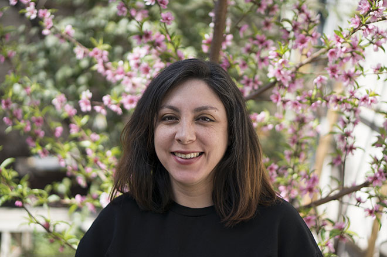

Hola, soy Rosa
Egresada del bootcamp de Laboratoria con especialidad de UX Design en Santiago de Chile.
En este contexto he trabajado en varios proyectos, en los que he participado como UX Designer en equipos multidisciplinarios con metodologías ágiles, como otras UX, así como con Frontend-Developers.
Mi objetivo como profesional es crear experiencias de usuarios, funcionales, acessibles, que se puedan disfrutar y que resuelvan problemas. Mi sueño es trabajar en proyectos que generen impacto social y en la calidad de vida de las personas. Mi tiempo libre me gusta pasarlo en familia, disfruto profundamente el arte, amo las montañas y me encanta ir al sauna.
Puedes seguirme en LinkedIn, o enviar un mail a - rosadiazgalaz@yahoo.com.
Algunas de mis habilidades
- Prototyping
- Design Sprint
- Journey Mapping
- Arquitectura de la Información
- Testeo de Usabilidad
- Diseño Visual
Herramientas
- Figma
- Photoshop
- Zeplin
- Google Analytics
Código
- HTML/CSS
- Javascript (básico)
- Bootstrap
Intereses
- UX Research
- Diseño Centrado en Humanos
- Design Thinking
- Sketching
- Prototyping